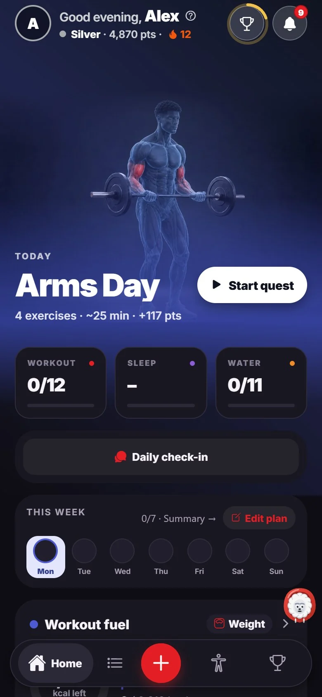

See every muscle you train.
Every exercise in x-ray: the main muscles in dark red, the helpers in light red. The bar loads up with your weight, the body looks like yours, and an AI coach knows your week. Free, and working in your browser today.
🔒 A free account saves your workouts. We never sell your data or show ads.
- Any browser, phone or computer
- Android in early access — ask for an invite
- Free, no card
- 25 languages
